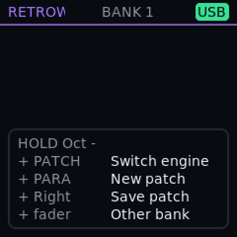
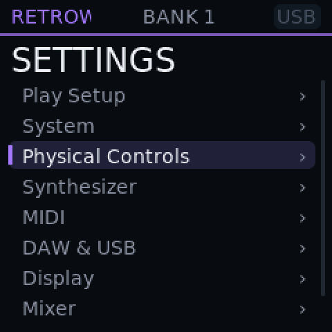

Open firmware · M-Vave SMK-37 Elite
Every cycle spent on what you play.
Oscuro is open firmware that squeezes an entry-level keyboard until it plays like more. No fixed workflow, no rails, nothing playing itself: choose the build and the settings that fit how you play.
What do you want from it?
Oscuro is not one size fits all. Pick the priority, then the build and settings that serve it. Nothing forces a workflow on you, and nothing plays itself.
Reflexes
Fast, responsive keys and pads for rapid playing and finger drumming.
- Build
- DAW build
- Tune
- Pad response, scan speed, velocity curves.
Soundscapes
Big layered pads and deep synthesis, with as many voices as you ask for.
- Build
- Viroid build
- Tune
- Voice limit, HyperSaw cap, scan speed.
Classics
The old legends in balance: DX7, CZ, Juno and Moog, with drums and effects.
- Build
- Retrowave build
- Tune
- Patch pads, FX rack, engine switching.
Studio
Creative tools for dedicated DAW work, and clock and audio for other gear.
- Build
- DAW build
- Tune
- Harmony Helper, MIDI clock, USB audio, capture.
Choose what to play.
Every flavour is a complete firmware, tuned until it fits the hardware. Picking one means picking what it gives up, so each row says so.
| Flavour | Sound | Drums | DAW assist | What it gives up | Status |
|---|---|---|---|---|---|
Retrowave Four classic engines in one build: DX7 FM, Casio CZ, Juno and Moog. Switch engine from the keys. |
DX7 FM, Casio CZ, Juno, Moog | Yes | – | Assignable bank-B knobs and faders; Viroid has its own build. | Test build |
Viroid A Virus-inspired synthesizer that plays original Virus patches. |
Viroid virtual analog | – | – | Everything that is not synthesis. | Test build |
DAW A controller first, with chord, melody and harmony assist. |
Your DAW's instruments | – | Yes | A smaller capture buffer, because your host records. | Test build |
Live Stand-alone performance: 16 patterns per track and 2048 captured notes. |
– | – | – | Memory goes to patterns and capture history. | Test build |
Tympanika A drum-only groovebox: eight Microtonic-style channels with left/right morph. |
Microtonic-style drums | Yes | – | No melodic engine. | Test build |
Phantasm Jungle, drum & bass and psytrance: drums plus tone lanes. |
Microtonic-style drums, tone lanes | Yes | – | The tone lanes are still being added; today it links the drum engine. | Test build |
Mutable-inspired A Plaits-inspired macro oscillator. |
Plaits-inspired macro oscillator | – | – | Not available yet. | Planned |
- Sounds from the unit itself: Retrowave for the classics, Viroid for one deep synthesizer.
- Your DAW in charge: the DAW build, with Harmony Helper.
- Beats: Tympanika for pure drums, Phantasm for fast genres.
Tailored. Never fragmented.
Each build is tuned for a different priority, and all of them speak the same language. What you learn on one carries to the next.
One grammar
Oct- is the shift key. Left and Right go in and out. Dots show where you are in a carousel. Learn it once and it works on every screen of every build.
One colour language
A flavour has one colour. You see it on the pads, on the screen header and on its row on this page.
One standard of proof
Every claim carries a badge: measured on the unit, in a test build, or planned. Nothing is presented as finished before it sounds.
The same four gestures, on four different screens




Easy to try. Easy to undo.
Putting Oscuro on your keyboard changes one area of its memory, and every step can be reversed.
Only the app is written
The keyboard's boot code, your settings and its calibration stay exactly as they are.
Back to M-Vave in minutes
The installer puts M-Vave's own firmware back at any time, from Oscuro or from any M-Vave version.
Your data is not touched
Oscuro never erases M-Vave's user data by itself. Save a backup of the patch memory first and restore it later.
A safe start
Hold Globe while switching on to skip Bluetooth, the faster clock and other optional extras.
A few minutes in a browser.
Three steps, nothing to install, and every update can be undone.
- 1Close your DAW, connect the keyboard and open the installer page.
- 2Choose the Oscuro file for the build you want. For a first install also choose M-Vave's own firmware file.
- 3Press Install and keep the cable connected until it says Finished.